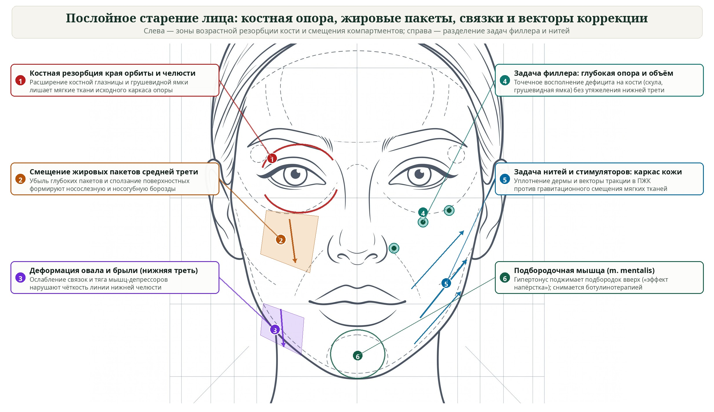

Нити или филлер: в чём разница и как выбирают
Коротко о главном
- Нити и филлер решают разные анатомические задачи. Армирующие и лифтинговые нити уплотняют субдермальный каркас и удерживают ткани от смещения, тогда как филлеры восполняют утраченный объём и формируют глубокую опору на кости.
- Эффект нитей развивается в две фазы. Сразу после имплантации материал даёт механическую поддержку, а в течение последующих месяцев вокруг него формируется собственный коллагеновый каркас, который сохраняется после рассасывания нити.
- Семейство нитей выбирают по толщине кожи и цели коррекции. Гладкие линейные нити армируют кожу без добавления объёма, плетёные усиливают сцепление в более плотных тканях, а лифтинговые нити с насечками механически перемещают и фиксируют сместившиеся участки.
- Обратимость и профиль безопасности различаются. Гиалуроновый филлер при необходимости можно растворить ферментом (гиалуронидазой), но он требует строгого контроля сосудистой анатомии; рассасывающиеся нити удалить ферментом нельзя, поэтому при тонкой коже критична точная глубина проведения.
Вопрос «нити или филлер» пациенты задают едва ли не чаще всех остальных. И он поставлен неверно. Это не два варианта одного решения, как «чай или кофе». Это два разных инструмента для двух разных задач, и на практике врачи часто сочетают оба метода, но в разное время и в разных зонах.
Чтобы выбрать, нужно понимать механику: что именно делает нить, что делает филлер и в каких случаях каждый из них бесполезен. Разберём эту механику по шагам.
Доказано: описано в учебниках и подтверждается независимо; Скорее да: исследования подтверждают механизм с оговорками; Спорно: клиническая практика расходится, единого мнения нет.

1. Что такое нить и что она делает
Косметологическую нить изготавливают из тонкого биодеградируемого полимера, который проводят под кожей. Сам по себе он не «подтягивает» лицо, как иногда представляют. Его действие складывается из двух вещей.
Механическая поддержка. Пока нить находится в тканях, она создаёт каркас, который не даёт коже складываться в определённых направлениях. Это временная, но реальная опора.
Стимуляция собственного коллагена. Вокруг нити развивается контролируемая реакция, в результате которой образуется новая соединительная ткань. Когда нить рассасывается, эта ткань остаётся. Скорее да
Из этого следует важное: нить работает не мгновенно и не вечно. Её эффект развивается в две фазы: сначала работает механический каркас, затем включается биологический синтез коллагена.
2. Три семейства нитей
Слово «нити» объединяет разные материалы с разной логикой. Путаница возникает, когда человек приходит «на нити», а ему предлагают не то, что он представлял.
| Тип | Как выглядит | Задача | Когда не подходит |
|---|---|---|---|
| Гладкая | Ровная тонкая нить с насечками или без | Армирование: укрепить ткань, не добавляя объёма | Когда главная проблема — нехватка объёма |
| Плетёная | Косичка из нескольких волокон | Более плотный каркас, больше точек сцепления | Тонкая кожа: выше риск неровностей |
| Объёмная | Спираль или конус, расправляющийся в ткани | Восполнить дефицит объёма в конкретной зоне | Если нужна именно поддержка, а не объём |
Отдельно стоит сказать про «подтяжку нитями» — формулировку, которая встречается в рекламе. Механически нить не может подтянуть лицо так, как это делает хирургическая операция: у неё нет точки фиксации к кости и нет возможности переместить весь массив тканей. Она может укрепить и поддержать. Это разные вещи, и честная клиника их не смешивает. Спорно
3. Нити и филлер: в чём принципиальная разница
Разница не в «силе» и не в цене, а в том, на какой вопрос отвечает каждый инструмент.
| Параметр | Нити | Филлер |
|---|---|---|
| Основная задача | Укрепить ткань, создать каркас | Восполнить объём, поставить опору |
| Скорость эффекта | Поддержка сразу, коллаген — месяцы | Объём сразу, окончательно — через недели |
| Обратимость | Практически нет: нить нельзя «растворить» | Частично: часть препаратов можно скорректировать |
| Главный риск | Неровности, контурирование, асимметрия | Неровности, перекоррекция, сосудистые события |
| Кому подходит | Плотная кожа, сохранённый объём, ранние изменения | Дефицит объёма любой природы |
Ключевой критерий выбора касается обратимости. Нити нельзя «отменить»: если результат не нравится, придётся ждать, пока материал рассосётся. Филлер в этом смысле более управляем. Это не значит, что нити хуже — это значит, что к ним выше требования по показаниям и технике.
4. Как выбирают на самом деле
Не по цене и не по совету подруги. Выбор начинается с вопроса: чего именно не хватает — объёма, плотности или поддержки?
- Не хватает объёма (плоские щёки, западение у крыла носа, «усталое» лицо) — задача для восполнения объёма. Нити здесь работают плохо: держать нечего.
- Не хватает плотности (тонкая кожа, ранние возрастные изменения, сетка мелких линий при сохранённой форме) — задача для укрепления. Объём здесь часто лишний. Скорее да
- Нужна поддержка в конкретной зоне (например, опускается угол рта) — возможны оба инструмента, и решение зависит от ткани, а не от категории. Спорно
И ещё один фактор, о котором говорят реже: возраст и состояние тканей. У молодой плотной кожи запас прочности больше, и вмешательство переносится легче. У тонкой возрастной кожи риски неровностей выше при любом инструменте, поэтому требования к технике строже. Скорее да
Сравнительных исследований «нити против филлера» в строгом виде почти нет: слишком разные показания и слишком разные способы оценивать результат. Поэтому на практике выбор опирается на анатомию, осмотр и опыт врача, а не на таблицу с баллами. Любой, кто утверждает, что «однозначно лучше», скорее продаёт, чем объясняет.
5. Риски, которые надо знать заранее
Нити. Самые частые проблемы — неровности и контурирование: нить может проступать под кожей, особенно если она тонкая. Возможна асимметрия, если ткань с одной стороны повела себя иначе. Реже — воспаление и повреждение сосудов. Скорее да
Филлер. Прежде всего — сосудистые события: попадание препарата в сосуд. Это редкое, но серьёзное осложнение, требующее немедленных действий. Отсюда и требования к квалификации: речь идёт не о косметическом неудовольствии, а о безопасности.
Общее для обоих: результат зависит от анатомии. Одинаковая процедура у двух людей с разной толщиной кожи, разным тонусом мышц и разным состоянием связок даст разные исходы. Это не дефект метода, а его природа.
6. Короткий вывод
Нити и филлер не конкурируют. Нити укрепляют, филлер восполняет. При дефиците объёма базовым решением служит филлер, тогда как нити не дадут ожидаемой опоры. При снижении плотности кожи и сохранённых контурах выбирают нити, а лишний объём только утяжелит ткани.
Если в плане есть и то, и другое, их, как правило, разводят во времени: сначала возвращают опору, потом укрепляют — или наоборот, в зависимости от исходной картины. Одновременно «всё сразу» — не признак профессионализма, а признак спешки. Спорно
И главное: любой из этих инструментов работает только тогда, когда совпадает с задачей. Самый дорогой и современный материал, применённый не по показаниям, даёт худший результат, чем ничего.
Статья объясняет разницу подходов, а не назначает процедуру. Здесь нет названий материалов, размеров, точек введения и схем: это предмет очного обучения и клинического решения. Материал не заменяет консультацию врача.
Частые вопросы пациентов (FAQ)
Как именно работают косметологические нити под кожей?
Рассасывающаяся косметологическая нить работает в две последовательные фазы. На первом этапе она создаёт под кожей механический каркас, который препятствует сминанию и смещению мягких тканей по векторам гравитации. На втором этапе вокруг материала запускается контролируемый неоколлагеногенез: фибробласты синтезируют новые волокна коллагена, которые продолжают удерживать и уплотнять ткань после полного биорассасывания самой нити.
Чем отличаются гладкие, плетёные и лифтинговые нити с насечками?
Гладкие линейные мезонити вводят субдермально для биоармирования: они уплотняют кожу и сокращают мелкую морщинистую сетку, не меняя объёмов лица. Плетёные («косички») и спиральные модификации формируют более плотный соединительнотканный тяж и работают с локальными заломами, но требуют достаточной толщины покровных тканей. Лифтинговые нити с насечками (коги) имеют микрозубцы по всей длине, за счёт которых врач захватывает, перемещает и фиксирует сместившиеся жировые пакеты к неподвижным связочным зонам.
В чём принципиальная разница между нитями и филлером?
Инструменты работают с разными слоями и механизмами старения. Филлер восполняет дефицит объёма в глубоких жировых компартментах или на надкостнице, возвращая тканям утраченную внутреннюю опору, и при использовании гиалуроновой кислоты обратим с помощью фермента. Нити не добавляют лишнего объёма и не утяжеляют лицо: их задача состоит в укреплении кожного лоскута, стимуляции собственного коллагена и векторной фиксации мягких тканей.
Как врач выбирает между нитями и филлером на консультации?
На очном осмотре врач оценивает морфотип старения, толщину дермы и ведущий дефицит. При уплощении средней трети лица, глубокой грушевидной ямке или усталом морфотипе базовым методом служит восполнение опоры филлером, так как нитям без внутреннего объёма нечего удерживать. При достаточном собственном объёме, склонности к отёкам, снижении тургора кожи или начальном гравитационном птозе приоритет отдают нитевому армированию, а при сочетанных изменениях методики разводят по этапам.